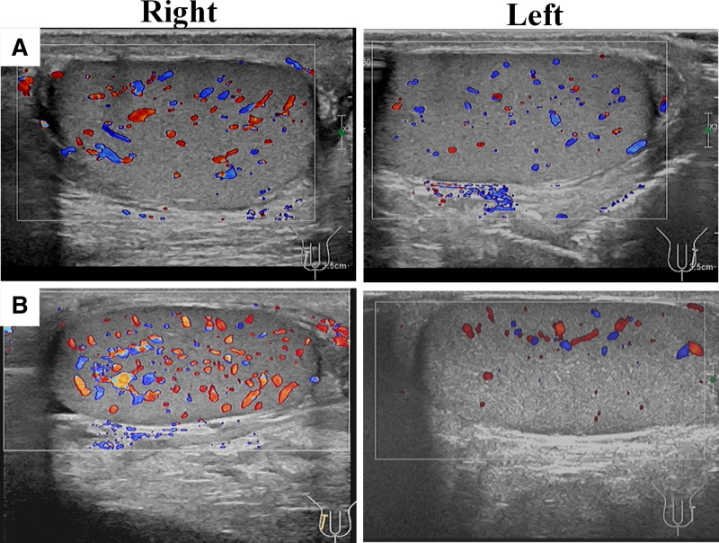

Ficha del catálogo
Orquiepididimitis aguda
- Sistema
- Reproductor
- Modalidad
- US
- Región
- Escroto
- Dificultad
- Básico
Es la inflamación del epidídimo y del testículo de causa habitualmente infecciosa, por vía ascendente desde la uretra o la vejiga. Constituye la causa más frecuente de escroto agudo en el adulto y se presenta con dolor de instauración progresiva, aumento de tamaño, fiebre y síntomas urinarios. El diagnóstico diferencial con la torsión es la razón principal para realizar el estudio.
Técnica
El ultrasonido escrotal con transductor lineal de alta frecuencia y Doppler color es la técnica de elección. Se explora primero el lado sano para ajustar la ganancia y después el sintomático con los mismos parámetros. Deben usarse escalas de velocidad bajas para detectar los flujos lentos del testículo.
Qué observar
- Epidídimo aumentado de tamaño e hipoecogénico, sobre todo en la cola
- Aumento del flujo con Doppler color respecto al lado contralateral
- Afectación del testículo con parénquima heterogéneo cuando el proceso se extiende
- Hidrocele reactivo y engrosamiento de las cubiertas escrotales
- Áreas focales sin flujo que sugieren infarto o absceso
- Aspecto de la vejiga y de la próstata como posible foco de origen
Hallazgos
El epidídimo aparece engrosado, hipoecogénico y con hipervascularización marcada, hallazgo que sostiene el diagnóstico. Cuando la inflamación alcanza el testículo, este aumenta de tamaño y muestra áreas hipoecogénicas con flujo aumentado. La progresión desfavorable se traduce en colecciones con contenido y pared gruesa que corresponden a abscesos, o en zonas avasculares por infarto secundario al edema.
Perlas
La hiperemia es el rasgo que separa esta entidad de la torsión, en la que el flujo está disminuido o ausente. Sin embargo, una orquiepididimitis muy avanzada puede comprometer la perfusión por edema, de modo que ante un cuadro con áreas sin flujo conviene informar la posibilidad de infarto y mantener una vigilancia estrecha.
Diagnóstico diferencial
- Torsión testicular
- Presenta dolor brusco, flujo intratesticular disminuido o ausente y remolino en el cordón espermático.
- Torsión de apéndice testicular
- Muestra un nódulo avascular junto al polo superior con flujo testicular conservado.
- Tumor testicular con inflamación asociada
- Es una masa sólida intratesticular persistente que no cambia con el tratamiento antibiótico.
- Hernia inguinoescrotal complicada
- Se identifica contenido intestinal o grasa en el canal inguinal en continuidad con el abdomen.
Simuladores
- Epidídimo prominente en la exploración con ganancia Doppler excesiva
- Quiste de epidídimo con inflamación reactiva
- Trauma escrotal reciente con hematoma
Por modalidad
- US
- Es la técnica de elección, demuestra la hiperemia, delimita abscesos y descarta la torsión.
- TC
- No está indicada en el escroto agudo y solo se emplea si se sospecha extensión a la pared abdominal o al retroperitoneo.
Protocolo
Ultrasonido escrotal con transductor lineal de alta frecuencia, valorando ambos testículos y epidídimos en dos planos, con Doppler color y espectral configurado para flujos lentos y comparación directa entre lados. Se completa con exploración de la vejiga, del residuo posmiccional y de la próstata cuando el cuadro lo sugiere. Se recomienda control por imagen si no hay mejoría clínica para detectar absceso o infarto.
Clasificación
Errores frecuentes
- Usar ajustes Doppler distintos entre ambos lados y crear falsas asimetrías
- Descartar torsión solo por la presencia de flujo sin explorar el cordón espermático
- Atribuir a inflamación una masa intratesticular sin control tras el tratamiento

orquiepididimitis escroto agudo hiperemia Doppler color absceso escrotal epidídimo infección urinaria